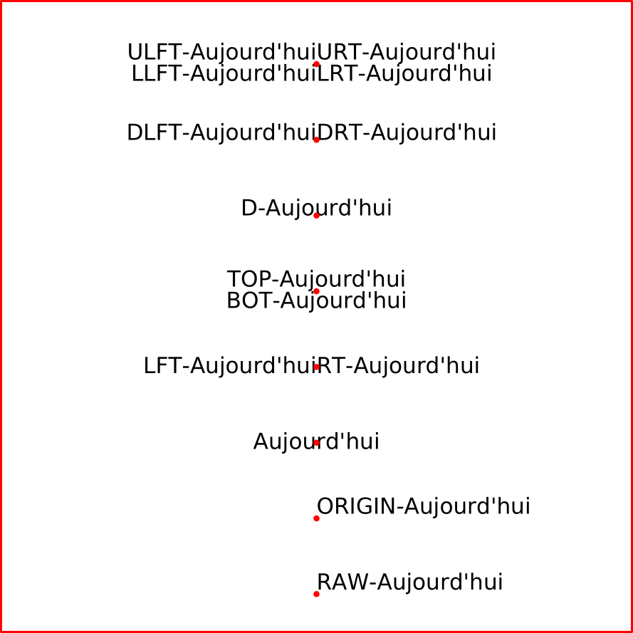

Note:
-
With MkIV, be careful to use
textext.dfltwhich means DeFauLT. -
With LMTX, be careful to use
textext.dlft) for LeFT, liketextext.ulft) andtextext.llft)-
(
textext.dfltdoes not work with LMTX).
-
(
-
\starttext \setupMPinstance [metafun] [textstyle={\definedfont[name:dejavusans*default at 15pt]\ignorespaces}] \startMPpage string MonTexte ; MonTexte := "Aujourd'hui"; draw (0cm,0cm)--(15cm,0cm)--(15cm,15cm)--(0cm,15cm)--cycle withpen pencircle scaled 0.5mm withcolor red; pair decal ; decal := (0.0cm,-1.8cm) ; %------------------------------------------------------------------------------ pair PA ; PA := (7.5cm,13.5cm) ; draw textext.urt ("URT-" & MonTexte) shifted PA; draw textext.ulft("ULFT-" & MonTexte) shifted PA; draw textext.llft("LLFT-" & MonTexte) shifted PA; draw textext.lrt ("LRT-" & MonTexte) shifted PA; draw PA withpen pencircle scaled 1.5mm withcolor red; %------------------------------------------------------------------------------ pair PB ; PB := PA shifted decal ; draw textext.drt ("DRT-" & MonTexte) shifted PB; draw textext.dlft("DLFT-" & MonTexte) shifted PB; draw PB withpen pencircle scaled 1.5mm withcolor red; %------------------------------------------------------------------------------ pair PC ; PC := PB shifted decal ; draw textext.d("D-" & MonTexte) shifted PC; draw PC withpen pencircle scaled 1.5mm withcolor red; %------------------------------------------------------------------------------ pair PD ; PD := PC shifted decal ; draw textext.bot("BOT-" & MonTexte) shifted PD; draw textext.top("TOP-" & MonTexte) shifted PD; draw PD withpen pencircle scaled 1.5mm withcolor red; %------------------------------------------------------------------------------ pair PE ; PE := PD shifted decal ; draw textext.lft("LFT-" & MonTexte) shifted PE; draw textext.rt("RT-" & MonTexte) shifted PE; draw PE withpen pencircle scaled 1.5mm withcolor red; %------------------------------------------------------------------------------ pair PF ; PF := PE shifted decal ; draw textext(MonTexte) shifted PF; draw PF withpen pencircle scaled 1.5mm withcolor red; %------------------------------------------------------------------------------ pair PG ; PG := PF shifted decal ; draw textext.origin("ORIGIN-" & MonTexte) shifted PG; draw PG withpen pencircle scaled 1.5mm withcolor red; %------------------------------------------------------------------------------ pair PH ; PH := PG shifted decal ; draw textext.raw("RAW-" & MonTexte) shifted PH; draw PH withpen pencircle scaled 1.5mm withcolor red; %------------------------------------------------------------------------------ \stopMPpage \stoptext
- 